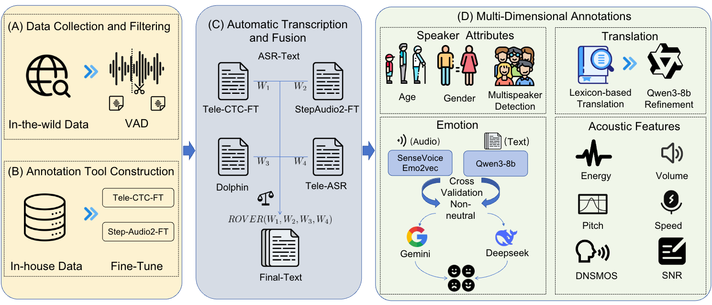

WenetSpeech-Wu:
Datasets, Benchmarks, and Models for
a Unified Chinese Wu Dialect Speech Processing Ecosystem
Abstract
Speech processing for low-resource dialects remains a fundamental challenge in developing inclusive and robust speech technologies.
Despite its linguistic significance and large speaker population, the Wu dialect of Chinese has long been hindered by the lack of large-scale speech data, standardized evaluation benchmarks, and publicly available models.
In this work, we present WenetSpeech-Wu, the first large-scale, multi-dimensionally annotated open-source speech corpus for the Wu dialect, comprising approximately 8,000 hours of diverse speech data.
Building upon this dataset, we introduce WenetSpeech-Wu-Bench, the first standardized and publicly accessible benchmark for systematic evaluation of Wu dialect speech processing, covering automatic speech recognition (ASR), Wu-to-Mandarin translation, speaker attribute prediction, speech emotion recognition, text-to-speech (TTS) synthesis, and instruction-following TTS (instruct TTS).
Furthermore, we release a suite of strong open-source models trained on WenetSpeech-Wu, establishing competitive performance across multiple tasks and empirically validating the effectiveness of the proposed dataset.
Together, these contributions lay the foundation for a comprehensive Wu dialect speech processing ecosystem, and we open-source proposed datasets, benchmarks, and models to support future research on dialectal speech intelligence
Contents
Data Overview

Figure 1. Data construction pipeline for WenetSpeech-Wu.
Data Samples
| Domain | Sample 1 | Sample 2 |
|---|---|---|
| Audiobook |
而宋子文搭子宋美龄搭子端纳呢侪没经过搜查 Confidence: 0.823 | Gender: Male DNSMOS: 2.19 | SNR: 19.93 |
借搿个机会纷纷响应搿个辰光奥地利个老皇帝已经死脱了 Confidence: 0.808 | Gender: Male DNSMOS: 3.54 | SNR: 40.60 |
| Children |
呃大灰狼就跟山羊奶奶讲山羊奶奶侬一家头蹲阿拉决定拿这点物事侪送拨侬 Confidence: 0.842 | Gender: Female DNSMOS: 0.81 | SNR: 6.90 |
胖胖又得意了啥人会得想到玩具汽车里头还囥了物事呢 Confidence: 0.800 | Gender: Female DNSMOS: 2.89 | SNR: 32.48 |
| Commentary |
这物事里头是有利益分配的讲好个埃种大生意难做一趟做两三年也做不出的 Confidence: 0.800 | Gender: Male DNSMOS: 2.71 | SNR: 44.49 |
这个新生儿啊相对来讲偏少大家侪不愿意生嘛 Confidence: 0.876 | Gender: Male DNSMOS: 3.00 | SNR: 47.81 |
| Culture |
这自然应该是像上海大都市这能介告诉伊虽然伊同样是外来的闲话 Confidence: 0.818 | Gender: Male DNSMOS: 2.95 | SNR: 34.59 |
已经有西南亚洲的外国人居住辣辣埃及从事贸易活动 Confidence: 0.846 | Gender: Male DNSMOS: 2.63 | SNR: 38.10 |
| Education |
青春的舞龙唱出短暂的曲子的清风里后世 Confidence: 0.825 | Gender: Female DNSMOS: 1.37 | SNR: 23.99 |
肠道菌群也就是阿拉肠道当中不同种类的细菌等微生物会的影响大脑的健康 Confidence: 0.871 | Gender: Male DNSMOS: 3.25 | SNR: 46.22 |
| Entertainment |
老百姓大家知了伊也勿中浪向摊头浪向吃两碗豆腐花 Confidence: 0.863 | Gender: Male DNSMOS: 2.30 | SNR: 20.07 |
孙女告娘当我儿子看我讲的闲话 Confidence: 0.857 | Gender: Male DNSMOS: 2.25 | SNR: 14.46 |
| Interview |
呃对伐现在实际上是新上海人越来越多了外加未来我觉着这群新上海人会得取代脱阿拉 Confidence: 0.814 | Gender: Male DNSMOS: 2.84 | SNR: 11.34 |
有搿种爷娘对伐但是我觉着现在好像就讲上海哦现在勿是侪讲房子也没人住嘛外国人跑得一批还有就是叫低生育率帮低结婚率嗯 Confidence: 0.900 | Gender: Female DNSMOS: 3.14 | SNR: 33.88 |
| Music |
当侬老了一个人头发花白坐辣盖落花旁边轻轻的从书架上面取下一本书来慢慢叫的阅读 Confidence: 0.822 | Gender: Female DNSMOS: 2.57 | SNR: 50.29 |
伴着夕阳的余晖一切侪是最美好的样子 Confidence: 0.858 | Gender: Female DNSMOS: 3.32 | SNR: 44.57 |
| News |
勿晓得个呀老早勿是讲旧社会个辰光嘛搿种流氓阿了 Confidence: 0.804 | Gender: Male DNSMOS: 3.40 | SNR: 31.13 |
观众朋友们就是教个小诀窍就是屋里向大家一直拌馄饨芯子啊 Confidence: 0.943 | Gender: Male DNSMOS: 3.44 | SNR: 37.91 |
| Podcast |
哦对的对的侬讲了对的哎哟这小米侬还是侬脑子好 Confidence: 0.909 | Gender: Female DNSMOS: 3.60 | SNR: 42.27 |
嗯沿海各地包括㑚南翔连是日本海的前头一个费城 Confidence: 0.844 | Gender: Male DNSMOS: 3.27 | SNR: 25.60 |
| RadioDrama |
侬就没命了为了不叫类似的事体再发生张晨 Confidence: 0.843 | Gender: Male DNSMOS: 3.25 | SNR: 48.05 |
其实这两年我也就是行尸走肉因为老婆没了 Confidence: 0.821 | Gender: Male DNSMOS: 3.43 | SNR: 26.43 |
| Vlog |
对的呀末伊拉这评论里向有种侬要讲一个人真个红了对勿啦就讲侬粉丝超过一万了嘛侬这种黑粉丝多 Confidence: 0.844 | Gender: Male DNSMOS: 2.42 | SNR: 17.01 |
正常保养电池呃电瓶啊搿种轮胎啊还有 Confidence: 0.841 | Gender: Male DNSMOS: 3.68 | SNR: 26.10 |
ASR Leaderboard
| Category | Model | In-House | WS-Wu-Bench | |
|---|---|---|---|---|
| Dialogue CER (%) ↓ | Reading CER (%) ↓ | ASR CER (%) ↓ | ||
| ASR Models | Paraformer | 63.13 | 66.85 | 64.92 |
| SenseVoice-small | 29.20 | 31.00 | 46.85 | |
| Whisper-medium | 79.31 | 83.94 | 78.24 | |
| FireRedASR-AED-L | 51.34 | 59.92 | 56.69 | |
| Step-Audio2-mini | 24.27 | 24.01 | 26.72 | |
| Qwen3-ASR | 23.96 | 24.13 | 29.31 | |
| Tencent-Cloud-ASR | 23.25 | 25.26 | 29.48 | |
| Gemini-2.5-pro | 85.50 | 84.67 | 89.99 | |
| Conformer-U2pp-Wu | 15.20 | 12.24 | 15.14 | |
| Whisper-medium-Wu | 14.19 | 11.09 | 14.33 | |
| Step-Audio2-Wu-ASR | 8.68 | 7.86 | 12.85 | |
| Annotation Models | Dolphin-small | 24.78 | 27.29 | 26.93 |
| TeleASR | 29.07 | 21.18 | 30.81 | |
| Step-Audio2-FT | 8.02 | 6.14 | 15.64 | |
| Tele-CTC-FT | 11.90 | 7.23 | 23.85 | |
TTS Evaluation
| Model | WS-Wu-Eval-TTS-easy | WS-Wu-Eval-TTS-hard | ||||||||
|---|---|---|---|---|---|---|---|---|---|---|
| CER (%) ↓ | SIM ↑ | IMOS ↑ | SMOS ↑ | AMOS ↑ | CER (%) ↓ | SIM ↑ | IMOS ↑ | SMOS ↑ | AMOS ↑ | |
| Qwen3-TTS† | 5.95 | -- | 4.35 | -- | 4.19 | 16.45 | -- | 4.03 | -- | 3.91 |
| DiaMoE-TTS | 57.05 | 0.702 | 3.11 | 3.43 | 3.52 | 82.52 | 0.587 | 2.83 | 3.14 | 3.22 |
| CosyVoice2 | 10.33 | 0.713 | 3.83 | 3.71 | 3.84 | 82.49 | 0.618 | 3.24 | 3.42 | 3.37 |
| CosyVoice2-Wu-CPT | 6.35 | 0.727 | 4.01 | 3.84 | 3.92 | 32.97 | 0.620 | 3.72 | 3.55 | 3.63 |
| CosyVoice2-Wu-SFT | 6.19 | 0.726 | 4.32 | 3.78 | 4.11 | 25.00 | 0.601 | 3.96 | 3.48 | 3.76 |
| CosyVoice2-Wu-SS* | 5.42 | -- | 4.37 | -- | 4.21 | 15.45 | -- | 4.04 | -- | 3.88 |
TTS
| Text | High-quality Recorded Single Speaker Prompt For Voice Cloning | CosyVoice2-Wu-SS | Qwen3-TTS | Prompt Wav For Voice Cloning | DiaMoE-TTS | CosyVoice2 | CosyVoice2-Wu-CPT | CosyVoice2-Wu-SFT |
|---|---|---|---|---|---|---|---|---|
|
昨日夜里向落了一夜雨，今早起来空气特别清爽，马路浪向也干净交关。 English Translation:Last night it rained all night. This morning when I woke up, the air was particularly fresh and the road surface was very clean. |
||||||||
|
今朝是礼拜六，我准备辣屋里向打扫卫生，拿房间理理清爽。 English Translation:Today is Saturday. I'm going to do some cleaning in the house and tidy up the rooms to make them look nice and fresh. |
||||||||
|
最近工作浪向有个项目快要结束哉，大家侪辣抓紧辰光做。 English Translation:Recently, one of our projects is coming to an end. Everyone should make the most of the time to finish it. |
||||||||
|
我小辰光最怕打针，看到医生就吓得来要命。 English Translation:When I was young, I was extremely afraid of getting injections. Just the sight of a doctor would make me extremely nervous. |
||||||||
|
我小辰光常庄到外婆屋里去孛相，外婆总会得拨我吃交关好吃的点心。 English Translation:When I was young, I often went to visit my grandmother. My grandmother would always prepare delicious snacks for me to eat. |
||||||||
|
我老早读书的辰光，每日放学总归要搭同学一道辣路浪向白相一歇再回去。 English Translation:When I was young and studying, every day after school, I would always walk home with my classmates, stopping for a rest along the way before returning home. |
||||||||
|
昨日我搭老朋友碰头，一道吃了顿饭，讲了交关闲话。 English Translation:Yesterday, I met with an old friend and we had a meal together. We also chatted about various topics. |
||||||||
|
我欢喜辣休息日的下半天困个午觉，起来以后精神好交关。 English Translation:I enjoy taking a nap in the second half of the day on weekends. After waking up, I feel much more energetic. |
||||||||
|
我欢喜辣落雪的辰光搭小囡一道堆雪人，虽然手冷，但是开心。 English Translation:I enjoy the snowy days with my little daughter, helping her build a snowman. Although my hands are cold, I am very happy. |
||||||||
|
早浪向买菜的辰光，摊主多送了我两根葱，蛮客气的。 English Translation:When I was buying vegetables early that morning, the vendor gave me an extra two scallions as a gesture of politeness. |
Instruct TTS
| Type | Tag | Instruct | Text | CosyVoice2-Wu-SFT | CosyVoice2-Wu-instruct |
|---|---|---|---|---|---|
| Prosodic Control |
基频低 语速慢 (low pitch and slow speaking speed) |
音调很低， 语速很慢地说 (speak with a low pitch and a slow speaking speed) |
阿拉屋里向养了一只小猫，伊老欢喜晒太阳的，每日下半天总归蹲辣窗口。 English Translation:Ala Wu had a little cat at home. She loved to bask in the sun and would always stay by the window for most of the day. |
||
| 今朝早浪向我去买早点的辰光，看见街浪向的樱花已经开哉，蛮漂亮的。 English Translation:This morning when I went to buy breakfast, I saw that the cherry blossoms along the street had already bloomed, and they looked very beautiful. |
|||||
| 今朝是礼拜六，我准备辣屋里向打扫卫生，拿房间理理清爽。 English Translation:Today is Saturday. I'm going to do some cleaning in the house and tidy up the rooms to make them look nice and fresh. |
|||||
| 基频高 语速快 (high pitch and fast speaking speed) |
音调很高， 语速很快地说 (speak with a high pitch and a fast speaking speed) |
阿拉屋里向养了一只小猫，伊老欢喜晒太阳的，每日下半天总归蹲辣窗口。 English Translation:Ala Wu had a little cat at home. She loved to bask in the sun and would always stay by the window for most of the day. |
|||
| 今朝早浪向我去买早点的辰光，看见街浪向的樱花已经开哉，蛮漂亮的。 English Translation:This morning when I went to buy breakfast, I saw that the cherry blossoms along the street had already bloomed, and they looked very beautiful. |
|||||
| 今朝是礼拜六，我准备辣屋里向打扫卫生，拿房间理理清爽。 English Translation:Today is Saturday. I'm going to do some cleaning in the house and tidy up the rooms to make them look nice and fresh. |
|||||
| Emotional Control |
开心(happy) | 用开心的情感说 (speak with happiness) |
今朝天气蛮好，太阳晒得暖烘烘，出去走走真适意！ English Translation:The weather is quite nice today. The sun is shining warmly and it's really pleasant to go for a walk! |
||
| 自家种个番茄终于红哉，摘下来生吃，酸酸甜甜味道正正好。 English Translation:After growing my own tomatoes, they finally turned red. I picked them and ate them raw. The taste was just right, sweet and sour. |
|||||
| 看到小囡在学堂里表演节目，伊在台浪向蹦蹦跳跳，真可爱。 English Translation:Seeing Xiaonan performing a show in the school hall, I was so amused by her bouncing and jumping on the stage. She was so adorable. |
|||||
| 愤怒(angry) | 用愤怒的情感说 (speak with anger) |
借了我五百块洋钿，讲过两天还，现在一个月了，影子也看勿见！ English Translation:I lent you 500 yuan. We agreed to repay it in two days. But now it's been a month and I haven't even seen your reply! |
我好好叫走路，侬骑车撞到我，连句对不起也勿讲就跑脱？ English Translation:I was walking along peacefully. You rode your bike and hit me. Without even saying "I'm sorry", you just ran off? |
搿只菜叶子全是黄个，还拿出来卖，良心痛勿痛？ English Translation:All these vegetable leaves are yellow, yet they are still sold. How can one not feel disgusted? |
|
| 悲伤(sad) | 用悲伤的情感说 (speak with sadness) |
今朝落班辰光落雨伞也忘记带，衣裳侪湿脱了，真个是触霉头。 English Translation:This morning when I finished work, I forgot to bring my umbrella. My clothes got all wet and I was really unlucky. |
|||
| 养了三年个猫咪昨日走脱了，寻了一夜天也寻勿着，难过煞了。 English Translation:I had kept a cat for three years. Yesterday it ran away. I searched all night but couldn't find it. I was extremely sad. |
|||||
| 辛辛苦苦做个方案，拨领导一眼也看勿上，心里向真个勿是滋味。 English Translation:I spent a lot of effort in making a plan, but even the leader couldn't take the time to look at it. How frustrating that is! |
|||||
| 惊讶(surprised) | 用惊讶的情感说 (speak with surprise) |
哎呀，搿只菜场里向个番茄哪能会得卖到十块洋钿一斤啦，真个是吓煞人！ English Translation:Oh dear, how could a tomato from that market possibly be sold at ten dollars a pound? That's really astonishing! |
|||
| 侬晓得伐，小张搿趟考试居然考了全班第一名，平常日脚伊一直中不溜秋个呀！ English Translation:You know what? Xiao Zhang actually got the top score in the exam. Usually, he never does so well! |
|||||
| 啥？侬讲阿拉老师下个号头就要退休啦，伊教书教了三十多年了呀！ English Translation:What? You're saying that our teacher is going to retire soon? She has been teaching for over thirty years! |